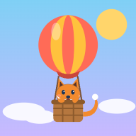

Pip for homeschool
Grades 3 to 5. Standards-aligned practice in math, English, science and social studies, a year plan and records. Free, no ads.
Why it fits a homeschool
- Every child at their own gradeSeveral kids on one account, each with a grade, their own islands, stars and skills.
- Review or get aheadOne tap to practice last year's islands or peek at next year's. Each grade's progress stays safe.
- Mastery, not minutesA skill counts as mastered at 8 of the last 10 right on the first try. Pip's Pick chooses what each child practices next.
- Standards you can nameEvery skill is tied to a standard code (Common Core math and English, NGSS science, state social studies).
- Records without paperworkPrint a learning record for any period: days, hours, and skills mastered with their standards.
- Works anywhereAny browser, tablet or phone, also offline. Pip reads questions aloud for younger readers.
Start in 3 steps
- Open pipskyislands.com and sign in as a parentTap the cloud button at the top. Sign in with Google or an email. Kids never type an email.
- Add each childA first name or nickname, your state and the grade you teach. Each child takes a 2-minute check, so the puzzles fit.
- Play 15–20 minutes a dayFollow Pip's Pick, or follow the year plan below. Check Parents' Corner → Progress each week.
Year plan by weeks
36 weeks for one grade: what to practice each week, with the island to play. Weeks 9, 18 and 27 are review weeks; week 36 is for test practice and celebrating.
The plan follows the island order in the game. Pip adapts within each skill, so a week can take longer or shorter; move on when the skills on the list are mastered or nearly mastered.
Learning record
In Parents' Corner → Progress, choose a period (this month, the last 3 months, the school year or any dates) and print. The record shows:
- days of learning and hours of practice, by month;
- puzzles solved and how many were right on the first try;
- every skill mastered in the period, with its standard code and the date;
- where your child stands now in each subject, and a line for your signature.
Homeschool rules differ from state to state. Check what your state asks you to keep; the record is meant to help, not to replace those rules.
Good to know
- Is it a full curriculum? It is practice and review that covers the grade's standards in four subjects. Pair it with reading real books, writing by hand and hands-on science.
- Which states? Every state. California families get California's standards; every other state plays the Common Core islands (math and English), NGSS science and social studies from the national C3 Framework.
- Is it free? Yes. No ads, no in-app purchases, nothing sold or shared.
- What is saved? Your child's first name and learning progress, in your account. See the privacy notice.
- More answers in How Pip works.
Questions or ideas: hello@pipskyislands.com